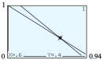
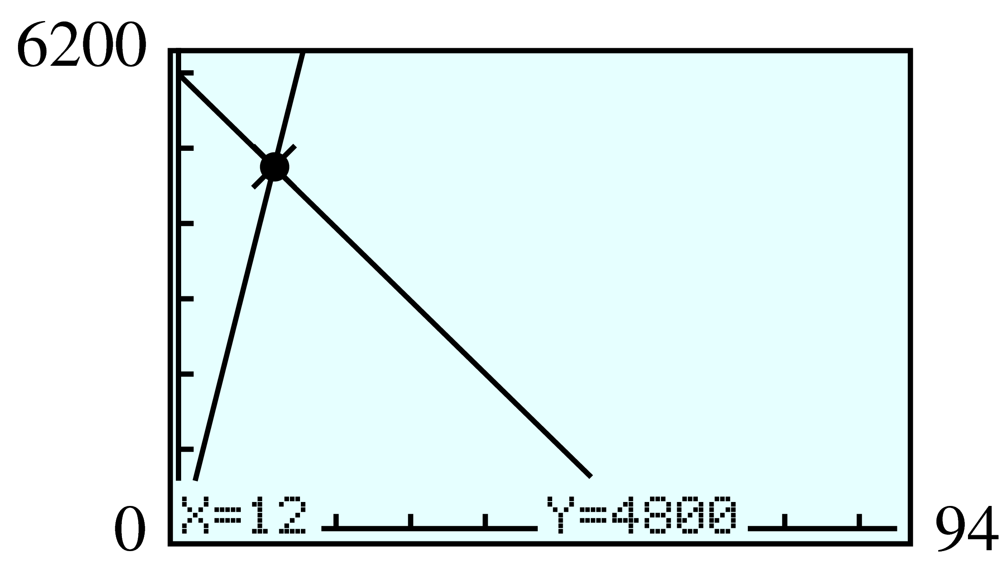

Section 8.1 Systems of Linear Equations in Two Variables
¶Systems of linear equations are some of the most useful and widely used mathematical tools for solving problems. Systems involving hundreds of variables and equations are not uncommon in applications such as scheduling airline flights or routing telephone calls.
Subsection Solving Systems by Graphing
A biologist wants to know the average weights of two species of birds in a wildlife preserve. She sets up a feeder whose platform is actually a scale and mounts a camera to monitor the feeder. She waits until the feeder is occupied only by members of the two species she is studying, doves and blue jays. Then she takes a picture, which records the number of each species on the scale and the total weight registered.
From her two best pictures, she obtains the following information. The total weight of three blue jays and six doves is \(48\) ounces, and the total weight of five blue jays and two doves is \(32\) ounces. Using these data, the biologist estimates the average weight of a blue jay and of a dove. She begins by assigning variables to the two unknown quantities:
Because there are two variables, the biologist must write two equations about the weights of the birds. In each of the two photos,
Thus,
This pair of equations is an example of a linear system of two equations in two unknowns (or a \(2\times 2\) linear system, for short). A solution to the system is an ordered pair of numbers, \((b, r)\text{,}\) that satisfies both equations in the system.
Recall that every point on the graph of an equation represents a solution to that equation. A solution to both equations corresponds to a point on both graphs. Therefore, a solution to the system is a point where the two graphs intersect.
From the figure above, it appears that the intersection point is \((4, 6)\text{,}\) so we expect that the values \(b=\alert{4}\) and \(d=\blert{6}\) form the solution to the system. We can check by verifying that these values satisfy both equations in the system.
Both equations are true, so we conclude that the average weight of a blue jay is \(4\) ounces, and the average weight of a robin is \(6\) ounces.
Notebook 8.1. QuickCheck 1.
We can obtain graphs for the equations in a system quickly and easily using a calculator.
Example 8.2.
Use your calculator to solve the system by graphing.
We set the graphing window to
and enter the two equations. We can see in the figure that the two lines intersect in the third quadrant. We use the TRACE key to find the coordinates of the intersection point, \((-2,-3)\text{.}\) The solution to the system is \(x=-2\text{,}\) \(y=-3\text{.}\)

Note 8.3.
The values we obtain from a calculator may be only approximations, so it is a good idea to check the solution algebraically. In Example 8.2, we find that both equations are true when we substitute \(x = \alert{-2}\) and \(y=\blert{-3}\text{.}\)
Notebook 8.4. QuickCheck 2.
Notebook 8.5. Practice 1.
Notebook 8.6. Pause and Reflect.
Technology 8.7. Using the Intersect Feature to Solve a System.
Because the TRACE feature does not show every point on a graph, we may not find the exact solution to a system by tracing the graphs. In the next Example we demonstrate the intersect feature of the calculator.
Example 8.8.
Solve the system
We can graph this system in the standard window by solving each equation for \(y\text{.}\) We enter
and then press ZOOM \(6\text{.}\) (Don't forget the parentheses around the numerator of each expression.)
We Trace along the first line to find the intersection point. It appears to be at \(x=4.468051\text{,}\) \(y =-2.734195\text{,}\) as shown in figure (a). However, if we press the up or down arrow to read the coordinates off the second line, we see that for the same \(x\)-coordinate we obtain a different \(y\)-coordinate, as in figure (b).
The different \(y\)-coordinates indicate that we have not found an intersection point, although we are close. The intersect feature can give us a better estimate, \(x = 4.36\text{,}\) \(y = -2.85\text{.}\)

We can substitute these values into the original system to check that they satisfy both equations.
Notebook 8.9. Practice 2.
Subsection Solving Systems Algebraically
In previous algebra courses, you learned two algebraic techniques for solving \(2\times 2\) linear systems: substitution and elimination. See Algebra Skills Refresher Section A.5 if you would like to review these techniques.
Example 8.10.
Rani kayaks downstream for \(45\) minutes and travels a distance of \(6000\) meters. On the return journey upstream, she covers only \(4800\) meters in \(45\) minutes. How fast is the current in the river, and how fast would Rani kayak in still water? (Give your answers in meters per minute.)
-
First, we choose variables for the two unknown quantities.
Rani's speed in still water: \(r\) Speed of the current: \(s\) -
We must write two equations using the variables \(r\) and \(s\text{.}\)
First, we organize the information into a table. When Rani travels downstream, the current in the river helps her, so her effective speed is \(r+s\text{.}\) When she travels upstream she is fighting the current, so her speed is actually \(r-s\text{.}\)
Rate Time Distance Downstream \(r+s\) \(45\) \(6000\) Upstream \(r-s\) \(45\) \(4800\) Using the formula \(~~\text{Rate} \times \text{Time} = \text{Distance}~~\text{,}\) we write one equation describing Rani's journey downstream, and a second equation for the journey upstream.
\begin{align*} (r + s) \cdot 45 \amp = 6000\\ (r - s) \cdot 45 \amp = 4800 \end{align*}We apply the distributive law to write each equation in standard form.
\begin{align*} 45r + 45s \amp = 6000 \amp\amp(1)\\ 45r - 45s \amp = 4800 \amp\amp(2) \end{align*} -
To solve the system, we eliminate the variable \(s\) by adding the two equations vertically.
\(45r\) \(+\) \(45s\) \(=\) \(-6000\) \(+45r\) \(-\) \(45s\) \(=\) \(4800\) \(90r\) \(\) \(\) \(=\) \(10,800\) We now have an equation in one variable only, which we can solve for \(r\text{.}\)
\begin{align*} 90r \amp = 10,800\amp\amp \blert{\text{Divide both sides by 90.}}\\ r \amp = 120 \end{align*}To solve for \(s\) we substitute \(r = 120\) into any previous equation involving both \(r\) and \(s\text{.}\) We will use Equation (1).
\begin{align*} 45(120) + 45s\amp = 6000 \amp\amp \blert{\text{Simplify the left side.}}\\ 5400 + 45s \amp = 6000 \amp\amp \blert{\text{Subtract 5400 from both sides.}}\\ 45s \amp = 600 \amp\amp \blert{\text{Divide both sides by 45; reduce.}}\\ s\amp = \frac{40}{3} \end{align*} The speed of the current is \(\dfrac{40}{3}\text{,}\) or \(13\dfrac{1}{3} \) meters per minute, and Rani's speed in still water is \(120\) meters per minute.
Notebook 8.11. Practice 3.
Notebook 8.12. Pause and Reflect.
Subsection Inconsistent and Dependent Systems
Because two straight lines do not always intersect at a single point, a \(2\times 2\) system of linear equations does not always have a unique solution. In fact, there are three possibilities, as illustrated below.

The graphs may be the same line, as shown in figure (a).
The graphs may be parallel but distinct lines, as shown in figure (b).
The graphs may intersect in one and only one point, as shown in figure (c).
Example 8.13.
Solve the system
We use the calculator to graph both equations on the same axes, as shown below. First, we rewrite the second equation in slope-intercept form by solving for \(y\text{.}\)
Next, we enter the equations as

The lines do not intersect within the viewing window; they appear to be parallel. If we look again at the equations of the lines, we recognize that both have slope \(-1\) but different \(y\)-intercepts, so they are parallel. Because parallel lines never meet, there is no solution to the system.
A system with no solutions, such as the system in Example 8.13, is called inconsistent. A \(2\times 2\) system of linear equations is inconsistent when the two equations correspond to parallel lines. This situation occurs when the lines have the same slope but different \(y\)-intercepts.
Notebook 8.14. Practice 4.
A linear system with infinitely many solutions is called dependent. A \(2\times 2\) system is dependent when the two equations actually describe the same line. This situation occurs when the two lines have the same slope and the same \(y\)-intercept.
Example 8.15.
Solve the system
We begin by putting each equation in slope-intercept form.
For the second equation,
The two equations are actually different forms of the same equation. Because they are equivalent, they share the same line as a graph, as shown at right. Every point on the first line is also a point on the second line, so every solution to the first equation is also a solution of the second equation. Thus, the system has infinitely many solutions.

Here is a summary of the three cases for a \(2\times 2\) system of linear equations.
Solutions of \(2\times 2\) Linear Systems.
Dependent system. All the solutions of one equation are also solutions to the second equation and hence are solutions of the system. The graphs of the two equations are the same line. A dependent system has infinitely many solutions.
Inconsistent system. The graphs of the equations are parallel lines and hence do not intersect. An inconsistent system has no solutions.
Consistent and independent system. The graphs of the two lines intersect in exactly one point. The system has exactly one solution.
Notebook 8.16. Practice 5.
It is not always easy to tell from the equations themselves whether there is one solution, no solution, or infinitely many solutions. However, the method of elimination will reveal which of the three cases applies.
Example 8.17.
Solve the system
First, we rewrite the system in standard form as
We multiply Equation (1) by \(-2\) and add the result to Equation (2) to obtain
| \(-4x\) | \(-\) | \(6y\) | \(=\) | \(-4\) |
| \(4x\) | \(+\) | \(6y\) | \(=\) | \(7\) |
| \(0x\) | \(+\) | \(0y\) | \(=\) | \(3\) |
This equation has no solutions. The system is inconsistent. (Notice that both lines have slope \(\dfrac{-2}{3}\text{,}\) but they have different \(y\)-intercepts, so their graphs are parallel.)
We generalize the results from Example 8.17 as follows.
Inconsistent and Dependent Systems.
-
If an equation of the form
\begin{equation*} 0x + 0y = k \hphantom{blank}(k\ne 0) \end{equation*}is obtained as a linear combination of the equations in a system, the system is inconsistent.
-
If an equation of the form
\begin{equation*} 0x + 0y = 0 \end{equation*}is obtained as a linear combination of the equations in a system, the system is dependent.
Notebook 8.18. QuickCheck 3.
The following Notebook 8.19 illustrates a dependent system.
Notebook 8.19. Practice 6.
Notebook 8.20. Pause and Reflect.
Subsection Applications
Many practical problems involve two or more unknown quantities.
Example 8.21.
A cup of rolled oats provides 11 grams of protein. A cup of rolled wheat flakes provides 8.5 grams of protein. Francine wants to combine oats and wheat to make a cereal with 10 grams of protein per cup. How much of each grain will she need in one cup of her mixture?
Fraction of a cup of oats needed: \(x\) Fraction of a cup of wheat needed: \(y\) -
Because we have two variables, we must find two equations that describe the problem. It may be helpful to organize the information into a table.
Cups Grams of protein
per cupGrams of protein Oats \(x\) \(11\) \(11x\) Wheat \(y\) \(8.5\) \(8.5y\) Mixture \(1\) — \(10\) The wheat and oats together will make one cup of mixture, so the first equation is
\begin{equation*} x + y = 1 \end{equation*}The \(10\) grams of protein must come form the protein in the oats plus the protein in the wheat. This gives us a second equation:
\begin{equation*} 11x + 8.5y = 10 \end{equation*}We now have a system of equations.
-
We will solve the system by graphing. First, solve each equation for \(y\) in terms of \(x\) to get
\begin{align*} y \amp= -x + 1\\ y \amp = (10 - 11x)/8.5 \end{align*}Although we could simplify the second equation, the calculator can graph both equations as they are. We know that \(x\) and \(y\) represent fractions of one cup, so we set the window (as shown below) with
\begin{align*} \text{Xmin} \amp = 0 \amp\amp \text{Xmax} = 0.94\\ \text{Ymin} \amp = 0 \amp\amp \text{Ymax} = 1 \end{align*}The lines intersect at \((0.6, 0.4)\text{,}\) which we can verify by substituting these values into the original two equations of our system.
Francine needs \(0.6\) cup of oats and \(0.4\) cup of wheat.
Notebook 8.22. Practice 7.
Being unable to read exact coordinates from a graph is not always a disadvantage. In many situations, fractional values of the unknowns are not acceptable.
Example 8.23.
The mathematics department has $\(40,000\) to set up a new computer lab. The department will need one printer for every four terminals it purchases. If a printer costs $\(560\) and a terminal costs $\(1520\text{,}\) how many of each should the department buy?
Number of printers: \(p\) Number of terminals \(t\) -
Since the math department needs four times as many terminals as printers,
\begin{equation*} t=4p \end{equation*}The total cost of the printers will be \(560p\) dollars, and the total cost of the terminals will be \(1520t\) dollars, so we have
\begin{equation*} 560p + 1520t = 40,000 \end{equation*} -
We solve the second equation for \(t\) to get
\begin{equation*} t=(40,000 - 560p)/1520 \end{equation*}Now we graph the equations
\begin{align*} Y_1 \amp =4X\\ Y_2 \amp =(40000 - 560X)/1520 \end{align*}on the same set of axes. The second graph is not visible in the standard graphing window, but with a little experimentation we can find an appropriate window setting. The WINDOW values used for the figure below are
\begin{align*} \text{Xmin} \amp = 0 \amp\amp \text{Xmax} = 9.4\\ \text{Ymin} \amp = 0 \amp\amp \text{Ymax} = 30 \end{align*}
The lines intersect at approximately \((6, 24)\text{.}\) These values satisfy the first equation, but not the second.
\begin{align*} 560(\alert{6})+1520(\blert{24})\amp\stackrel{?}{=}40,000 \\ 39,840 \amp\ne 40,000 \end{align*} The exact solution to the system is \(\left(\dfrac{500}{83},\dfrac{2000}{83}\right)\text{.}\) But this solution is not of practical use, since the math department cannot purchase fractions of printers or terminals. The department can purchase \(6\) printers and \(24\) terminals (with some money left over).
Notebook 8.24. Practice 8.
Subsection An Application from Economics
The owner of a retail business must try to balance the demand for his product from consumers with the supply he can obtain from manufacturers. Supply and demand both vary with the price of the product: Consumers usually buy fewer items if the price increases, but manufacturers will be willing to supply more units of the product if its price increases.
The demand function gives the number of units of the product that consumers will buy in terms of the price per unit. The supply function gives the number of units that the producer will supply in terms of the price per unit. The price at which the supply and demand are equal is called the equilibrium price. This is the price at which the consumer and the producer agree to do business.
Example 8.25.
A woolens mill can produce \(400x\) yards of fine suit fabric if it can charge \(x\) dollars per yard. The mill's clients in the garment industry will buy \(6000 - 100x\) yards of wool fabric at a price of \(x\) dollars per yard. Find the equilibrium price and the amount of fabric that will change hands at that price.
Price per yard: \(x\) Number of yards: \(y\) -
The supply equation tells us how many yards of fabric the mill will produce for a price of \(x\) dollars per yard.
\begin{equation*} y=400x \end{equation*}The demand equation tells us how many yards of fabric the garment industry will buy at a price of \(x\) dollars per yard.
\begin{equation*} y = 6000 - 100x \end{equation*} -
We graph the two equations on the same set of axes, as shown below. We set the window values to
\begin{align*} \text{Xmin} \amp = 0 \amp\amp \text{Xmax} = 94\\ \text{Ymin} \amp = 0 \amp\amp \text{Ymax} = 6200 \end{align*}and use the
TRACEor the intersect command to locate the solution. The graphs intersect at the point \((12, 4800)\text{.}\) The equilibrium price is $\(12\) per yard, and the mill will sell \(4800\) yards of fabric at that price.
Notebook 8.26. QuickCheck 4.
Notebook 8.27. Practice 9.
Subsection Section Summary
¶Subsubsection Vocabulary
Look up the definitions of new terms in the Glossary.
Linear system
Solution of a system
Intersection point
Equilibrium point
Dependent
Inconsistent
Consistent and independent
Demand equation
Supply equation
Subsubsection CONCEPTS
We can solve a \(2\times 2\) linear system by graphing. The solution is the intersection point of the two graphs.
A linear system may be inconsistent (has no solution), dependent (has infinitely many solutions), or consistent and independent (has one solution).
Inconsistent and Dependent Systems.
-
If an equation of the form
\begin{equation*} 0x + 0y = k \hphantom{blank}(k\ne 0) \end{equation*}is obtained as a linear combination of the equations in a system, the system is inconsistent.
-
If an equation of the form
\begin{equation*} 0x + 0y = 0 \end{equation*}is obtained as a linear combination of the equations in a system, the system is dependent.
-
We can use a system of equations to solve problems involving two unknown quantities.
In economics, the price at which the supply and demand are equal is called the equilibrium price.
Subsubsection STUDY QUESTIONS
How can you test whether \((a, b)\) is a solution to a system of two linear equations?
Do two lines always intersect in one point? Explain.
When is a system useful for solving an applied problem?
Name two algebraic methods for solving a \(2\times 2\) linear system.
What is the result of performing elimination on a dependent system?
Explain the terms demand function, supply function, and equilibrium price.
Subsubsection SKILLS
Practice each skill in the Homework problems listed.
Solve a \(2\times\) linear system by graphing: #1–14, 31–34
Identify inconsistent and dependent systems: #15–20
Write a system of two linear equations to solve a problem: #21–30
Exercises Homework 8.1
¶In Problems 1–4, solve each system of equations using the graphs given. Verify algebraically that your solution satisfies both equations.
1.
\(\begin{aligned}[t] 2.3x - 3.7y \amp = 6.9\\ 1.1x + 3.7y \amp = 3.3 \end{aligned}\)

2.
\(\begin{aligned}[t] -2.3x + 5.9y \amp = 38.7\\ 9.3x + 7.4y \amp = -0.2 \end{aligned}\)

3.
\(\begin{aligned}[t] 35s - 17t \amp = 560 \\ 24s + 15t \amp = 2250 \end{aligned}\)

4.
\(\begin{aligned}[t] 56a + 32b \amp = -880\\ 23a - 7b \amp = 1250 \end{aligned}\)

In Problems 5–8, solve each system of equations by graphing. Use the window
Verify algebraically that your solution satisfies both equations.
5.
\(\begin{aligned}[t] y \amp = 2.6x + 8.2\\ y \amp = 1.8 - 0.6x \end{aligned}\)
6.
\(\begin{aligned}[t] y \amp = 5.8x - 9.8\\ y \amp = 0.7 - 4.7x \end{aligned}\)
7.
\(\begin{aligned}[t] \amp y = 7.2 - 2.1x\\ \amp-2.8x + 3.7y = 5.5 \end{aligned}\)
8.
\(\begin{aligned}[t] \amp y = -2.3x - 5.5\\ \amp 3.1x + 2.4y = -1.1 \end{aligned}\)
In Problems 9–14, graph each system by hand, using either the intercept method or the slope-intercept method. Identify the system as dependent, inconsistent, or consistent and independent.
9.
\(\begin{aligned}[t] 2x = y + 4 \\ 8x - 4y = 8 \end{aligned}\)
10.
\(\begin{aligned}[t] 2t + 12 = -6s \\ 12s + 4t = 24 \end{aligned}\)
11.
\(\begin{aligned}[t] w - 3z \amp = 6 \\ 2w + z \amp = 8 \end{aligned}\)
12.
\(\begin{aligned}[t] 2u + v \amp = 5 \\ u - 2v \amp = 3 \end{aligned}\)
13.
\(\begin{aligned}[t] 2L - 5W \amp = 6 \\ \dfrac{15W}{2}+ 9 \amp = 3L \end{aligned}\)
14.
\(\begin{aligned}[t] -3A = 4B + 12 \\ \dfrac{1}{2}A + 2 = \dfrac{-2}{3}B \end{aligned}\)
Use linear combinations to identify each system in Problems 15–20 as dependent, inconsistent, or consistent and independent. (See Algebra Skills Refresher Section A.5 to review linear combinations.)
15.
\(\begin{aligned}[t] 2m = n + 1 \\ 8m - 4n = 3 \end{aligned}\)
16.
\(\begin{aligned}[t] 6p = 1 - 2q \\ 12p + 4q = 2 \end{aligned}\)
17.
\(\begin{aligned}[t] r - 3s \amp = 4 \\ 2r + s \amp = 6 \end{aligned}\)
18.
\(\begin{aligned}[t] 2u + v \amp = 4 \\ u - 3v \amp = 2 \end{aligned}\)
20.
\(\begin{aligned}[t] \amp -3x = 4y + 8 \\ \amp \dfrac{1}{2}x +\dfrac{4}{3} = \dfrac{-2}{3}y \end{aligned}\)
19.
\(\begin{aligned}[t] \amp 2x - 5y = 6 \\ \amp \dfrac{15y}{2}+9=3x \end{aligned}\)
Solve Problems 21–30 by graphing a system of equations.
21.
Dash Phone Company charges a monthly fee of $\(10\text{,}\) plus $\(0.09\) per minute for long distance calls. Friendly Phone Company charges $\(15\) per month, plus $\(0.05\) per minute for long-distance calls.
Write an equation for Dash Phone Company's monthly bill if you talk long distance for \(x\) minutes.
Write an equation for Friendly Phone Company's monthly bill if you talk long distance for \(x\) minutes.
-
Graph both equations in the window
\begin{align*} {\text{Xmin}} \amp = 0 \amp\amp {\text{Xmax}} = 200\\ {\text{Ymin}} \amp = 0 \amp\amp {\text{Ymax}} = 30 \end{align*}and solve the system. How many minutes of long-distance calls would result in equal bills from the two companies?
22.
The Olympus Health Club charges an initial fee of $\(230\) and $\(13\) monthly dues. The Valhalla Health Spa charges $\(140\) initially and $\(16\) per month.
Write an equation for the cost of belonging to Olympus Health Club for \(x\) months.
Write an equation for the cost of belonging to Valhalla Health Spa for \(x\) months.
-
Graph both equations in the window
\begin{align*} {\text{Xmin}} \amp = 0 \amp\amp {\text{Xmax}} = 50\\ {\text{Ymin}} \amp = 0 \amp\amp {\text{Ymax}} = 800 \end{align*}and solve the system. After how many months of membership would the costs of belonging to the two clubs be equal?
23.
Yasuo can afford to produce \(50x\) bushels of wheat if he can sell them at \(x\) cents per bushel, and the market will buy \(2100 - 20x\) bushels at \(x\) cents per bushel.
What is the supply equation?
What is the demand equation?
Graph both equations and solve the system. Find the equilibrium price and the number of bushels of wheat Yasuo can sell at that prince.
24.
Mel's Pool Service can clean \(1.5x\) pools per week if it charges \(x\) dollars per pool, and the public will book \(120 - 2.5x\) pool cleanings at \(x\) dollars per pool.
What is the supply equation?
What is the demand equation?
Graph both equations and solve the system. Find the equilibrium price and the number of pools Mel will clean at that price.
25.
The Aquarius jewelry company determines that each production run to manufacture a pendant involves an initial set-up cost of $\(200\) and $\(4\) for each pendant produced. The pendants sell for $\(12\) each.
Express the cost \(C\) of production in terms of the number \(x\) of pendants produced.
Express the revenue \(R\) in terms of the number \(x\) of pendants sold.
Graph the revenue and cost on the same set of axes. How many pendants must be sold for the Aquarius company to break even on a particular production run?
26.
The Bread Alone Bakery has a daily overhead of $\(90\text{.}\) It costs $\(0.60\) to bake each loaf of bread, and the bread sells for $\(1.50\) per loaf.
Express the cost \(C\) in terms of the number \(x\) of loaves baked.
Express the revenue \(R\) in terms of the number \(x\) of loaves baked.
Graph the revenue and cost on the same set of axes. How many loaves must the bakery sell to break even on a given day?
27.
The admissions at a Bengals' baseball game was $\(7.50\) for adults and $\(4.25\) for students. The ticket office took in $\(465.50\) for \(82\) paid admissions. How many adults and how many students attended the game?
-
Write algebraic expressions to fill in the table.
Number of
ticketsCost per
ticketRevenue Adults \(x\) Students \(y\) Total \(\) Write an equation about the number of tickets sold.
Write a second equation about the revenue from the tickets.
Graph both equations and solve the system.
28.
There were \(42\) passengers on an airplane flight for which first-class fare was $\(400\) and tourist fare was $\(320\text{.}\) If the revenue for the flight totaled $\(14,400\text{,}\) how many first-class and how many tourist passengers paid for the flight?
-
Write algebraic expressions to fill in the table.
Number of
ticketsCost per
ticketRevenue First-Class \(x\) Tourist \(y\) Total \(\) Write an equation about the number of tickets sold.
Write a second equation about the revenue from the tickets.
Graph both equations and solve the system.
29.
Earthquakes simultaneously send out two types of waves, called P waves and S waves, but the two types travel at different speeds. A seismograph records arrival of P waves from an earthquake, and ninety seconds later the seismograph receives S waves from the same earthquake. The P waves travel at \(5.4\) miles per second, and S waves at \(3\) miles per second. How far is the seismograph from the earthquake?
-
Let \(x\) represent the time in seconds for the P to arrive at the seismograph, and \(y\) the distance in miles between the earthquake and seismograph. Fill in the table.
Rate Time Distance P waves \(\) S waves \(\) Write an equation about how far the S waves travel.
Write a second equation about how far the P waves travel.
Solve the system and answer the question in the problem.
30.
Thelma and Louise start together and drive in the same direction, Thelma driving twice as fast as Louise. At the end of \(3\) hours, they are \(96\) miles apart. How fast is each traveling?
-
Choose variables for the unknown quantities, and fill in the table.
Rate Time Distance Thelma \(\) Louise \(\) Write one equation about Thelma's and Louise's speeds.
Write a second equation about distances.
Solve the system and answer the question in the problem.
In Problems 31–34, solve each system of equations by graphing. Find the intercepts of each graph to help you choose a suitable window, then use the intersect feature to locate the solution.
31.
\(\begin{aligned}[t] \amp 38x + 2.3y = -55.2\\ \amp y = 15x + 121 \end{aligned}\)
32.
\(\begin{aligned}[t] \amp 25x - 1.7y = 10.5\\ \amp y + 5x = 49 \end{aligned}\)
33.
\(\begin{aligned}[t] 64x + 58y \amp = 707\\ 82x - 21y \amp = 496 \end{aligned}\)
34.
\(\begin{aligned}[t] 35x - 76y \amp = 293\\ 15x + 44y \amp = -353 \end{aligned}\)